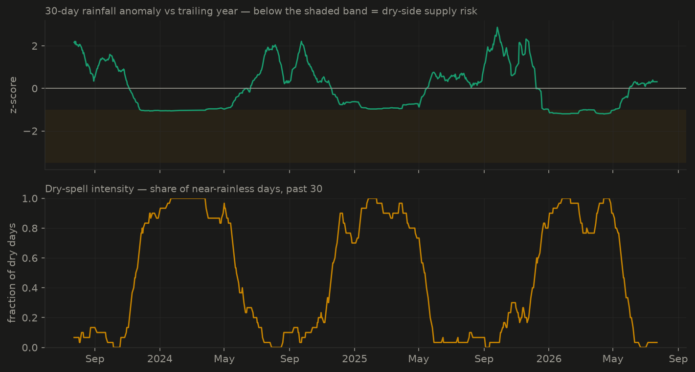
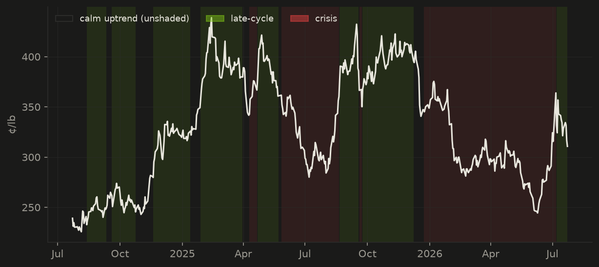

Trang miễn phí, tự cập nhật mỗi ngày làm việc: thời tiết
vùng trồng robusta Tây Nguyên, giai đoạn sinh trưởng của cây, và diễn biến
thị trường thế giới, viết bằng ngôn ngữ dễ hiểu. Toàn bộ mã nguồn và dữ
liệu đều mở.
Giai đoạn của cây
quả vào chắc
Rủi ro thời tiết theo giai đoạn
thấp (0.03)
Lượng mưa 30 ngày
+0.3σ so với mức bình thường theo mùa
Thị trường
giai đoạn cuối chu kỳ
Giá cà phê kỳ hạn (chuẩn arabica) chốt ở 311¢/lb, giảm 3.3% trong tuần và tăng 7.9% trong tháng. Mô hình đánh giá thị trường đang ở trạng thái giai đoạn cuối chu kỳ, duy trì 13 phiên. Lượng mưa Tây Nguyên gần mức bình thường theo mùa (+0.3σ). Cây cà phê đang trong giai đoạn quả vào chắc; mức rủi ro thời tiết theo giai đoạn: thấp. Đồng real Brazil mạnh lên (-2.1% trong một tháng), yếu tố hỗ trợ giá cà phê. Dự báo 14 ngày tới: khoảng 176 mm mưa so với mức trung bình mùa vụ 137 mm (+0.6σ) — mức căng thẳng dự kiến cho cây: thấp.
Thời tiết vùng trồng — Buôn Ma Thuột, Đắk Lắk
dữ liệu thời tiết đến 2026-07-17

Biểu đồ trên: lượng mưa 30 ngày so với chính địa phương này
trong một năm gần nhất (dưới dải màu là thiếu mưa). Biểu đồ dưới: tỷ lệ
ngày gần như không mưa trong 30 ngày qua. Cùng một mức thiếu mưa nhưng
tác động khác nhau tùy giai đoạn: thiếu nước lúc ra hoa (tháng 1–3) gây
hại nặng nhất, còn mưa nhiều vào vụ thu hoạch (tháng 10–12) lại là rủi
ro phơi sấy.
Thị trường thế giới
dữ liệu giá đến 2026-07-23 · chuẩn arabica KC=F (chuỗi
robusta liên tục đang được xây dựng từ các hợp đồng riêng lẻ)

Giá cà phê kỳ hạn, tô màu theo trạng thái thị trường mà mô
hình nhận diện (vùng không tô = xu hướng tăng ổn định; vàng = căng
thẳng; đỏ = khủng hoảng).